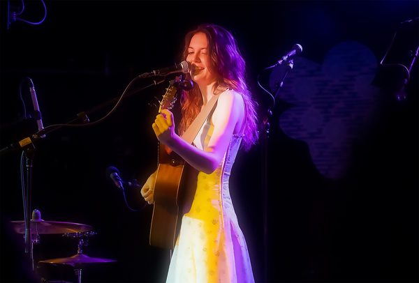

I came to see Kate Stephenson at the Pop Up du Label in Paris. Selkee and Fairhazel opened for her, each offering a great opening into their world. For Selkee, it was their first time playing under a new name after a decade-long career in Los Angeles. For Kate, it was her first time in Paris. She WILL see the Eiffel tower, she told us, it’s non-negotiable. For Fairhazel, it was not, he lived there before. The show felt like a gathering between old friends, where each would tell stories, sad, beautiful, funny, and we all listened very carefully so as not to miss a crumb.
Pink iPod: You're a singer-songwriter and there's a lot of humour in what you do. How has it been, like, playing to non native English speakers? Have you had to adjust?
Kate Stephenson: I have had to adjust a little bit. I feel like just the way that I perform, it's very much like talking a lot and then songs. It's like the songs are really sad, and so I talk for two straight minutes to try to bring the mood up in between. And I have noticed that a lot of the European crowds are a lot more respectful than I'm used to, and so they're really quiet and listening and then they clap, which is awesome, because I love it when people are actually listening to me. But I have a couple of times told jokes that, like, it just was quiet. But it was also like, I would rather it be quiet than people talking over me. So it was still fun, but yeah, it's definitely a completely different type of crowd than I've played to before.
Pink iPod: do you find it difficult to be, or have you tried, like, getting inspiration in happiness? Or is it just something that's not very natural to you?
Kate Stephenson: Yes and no. I think, like, I have, it's rare, but there have been times when I've been inspired by happiness. Like with a song I just came out with called Summerfoot, it was very much like, I feel so good right now that I have to write a song. But usually the way that my brain works is that, and like how it's worked since I was a kid, was like, if I feel something sad, instead of writing it in a diary it comes out as a song. And so most of my music is from, like, the depths of despair, because it's the only way I know how to process what I'm going through. But it does mean that my whole discography is, like, really upsetting. And so I have lately been trying to, like, feel similar strong feelings but in a good way.
Pink iPod: Yeah, it's true that Summerfoot feels like a way lighter song. Can you tell me what Summerfoot means?
Kate Stephenson: Yeah. The word itself, I'm not sure if it's a real word or not, but it just came to me. I'm from Florida. Well, I'm from Illinois, but I was born and grew up a little bit in Florida, and everyone's barefoot all the time and it's really hot outside. And so everyone who, like, grows up in a hot climate is always barefoot. We get these calloused feet, and it's super gross actually. But I started calling that summer feet, like, just because it's hot outside and so you're barefoot. And then I realised, the person who Summerfoot was about was one of those people who was always barefoot. And it just, like, instead of thinking it was gross, I just found it endearing that somebody who's an adult still runs around barefoot when it's hot outside. And so it's just kind of like a song about somebody who's still super youthful inside and acts like a kid but is a grown up. Yeah. So it was like a teasing song about that, but that's where Summerfoot comes from.
Pink iPod: You just moved to Nashville after living in many other cities. Do you think the environment of Nashville is gonna influence your sound ?
Kate Stephenson: Well, I think if anything it'll just mean more and more genres. I think that Nashville, I always had the idea that it was very country focused, which was one of the reasons why I didn't want to move there originally. But I've met so many people who do everything. Yes, I have written some country songs since, and there will be more country songs, but now I'm also writing punk. There's gonna be a lot more genres and sounds that come out of living in Nashville. I'm really excited to try everything that I can.
Pink iPod: How did punk come about? Is it something you listen to on your own?
Kate Stephenson: Yes, I listen to pretty much everything. But I want to try everything at least once and then find out that it's not for me.
Pink iPod: But are you scared of wandering into punk?
Kate Stephenson: Yes. And I'm still not even sure if I'll actually release any of my punk stuff. It might just be for me in my car to listen to. But I do really want to try, like, all of the different alternative genres, just to kind of test, test the muscle of songwriting and exercise it.
Pink iPod: Your song tracksuit has a more jazzy undertone to it. What about that song, like, kind of fitted that vibe?
Kate Stephenson: I think that that song kind of just came out of, like, this moment where I had access to my parents' piano, and that was really nice. And it just felt… it's hard to explain. I've listened to a lot of jazz, but I've never really written anything with, like, that type of melody or progression. But I was just feeling very, almost comical. I was so upset about this person, and then I realised that I just should have known better and it was mostly my fault. And it felt heartbreaking, but part of it just felt kind of funny. Like, he told me who he was, so I should have just believed him when he said that. And so I don't know, it just kind of flew out of me that way, where I feel like a lot of jazz progressions can have this weirdness to them that almost feels funny in a certain way, but they can also be so just gut wrenching. And so I felt like just the perfect genre to fall into.
Pink iPod: I was wondering if you had ever wandered, or would like to wander, in any other kind of writing, whether it's, like, a series or film, or...
Kate Stephenson: I actually am writing a short film right now. I went to school for filmmaking. I dropped out really fast, but, and so I've always wanted to, like, I, and I recently just started a Substack to just keep writing, like, articles and essays and things. I've always done that for fun. But I have this concept album that I wrote four years ago that I'm still working on, and it's, like, a pretty long term story, but it's just told in an album. And I am writing a short film about that story to kind of accompany the album, and hopefully be able to release that at some point.
Pink iPod: Can you tell us a little bit about what the story is about?
Kate Stephenson: It is a big metaphor, and it follows a woman committing crimes along the coast of the United States.
Pink iPod: You wrote your album This Is What You Get after what I understood to be a year full of, maybe, break ups?
Kate Stephenson: Yes.
Pink iPod: How has this year been so far? Not just romantically, just, do you feel better? It feels like your two last singles are a bit lighter.
Kate Stephenson: Yeah, I feel, yes, I am feeling pretty good this year. There is definitely going to be music that comes from this year, however, in the absence of Summerfoot. But yeah, I feel good, I feel excited. I feel like things are happening in my career that I've always wanted to happen, and dreamed of. But rest assured, there has been sadness.
Pink iPod: Okay, we will rest assured. Thank you so much.

Listen to Kate Stephenson